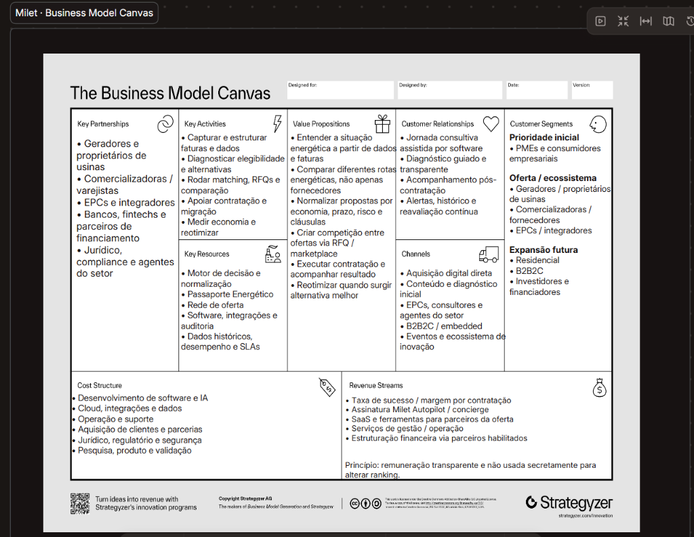

Plataforma Digital Independente para Decisão, Comparação e Gestão Contínua de Energia.
Assimetria tarifária e abertura da Baixa Tensão (Decreto 13.097/26).
Benchmarks globais e integração contínua (CCEE, GD, ACL).
28 User Stories, 14 no MVP, BDD, SPIDER e ciclo de 11 meses.
Engenharia da Computação · Projetos de Engenharia da Computação I (2026.2)
Docente Orientador: Prof. Dr. Rodrigo Juliani
Por que conceber e construir a Milet no âmbito de Engenharia da Computação?
O setor elétrico brasileiro vive sua maior virada histórica: a consolidação da GD (Lei 14.300/22) e a abertura do Mercado Livre para a baixa tensão (Decreto 13.097/26). O consumidor deixa de ser mero pagador de tarifa para ser tomador de decisão.
Pequenas e médias empresas (comércio, indústrias leves, clínicas) pagam as maiores tarifas de energia do país por falta de conhecimento técnico e ferramentas digitais para auditar, simular e negociar alternativas com segurança.
Resolver essa dor exige algoritmos determinísticos de simulação, ingestão automatizada de dados elétricos heterogêneos, leilões reversos e conciliação contínua de contratos em um sistema de alta confiabilidade e governança LGPD.
Tese Central: O consumidor ganha liberdade jurídica de escolha, mas não possui instrumentos computacionais independentes para exercê-la com segurança.
A jornada fragmentada do decisor e o diagnóstico de causa-raiz pelos 5 Porquês.
PDFs densos com tarifas TUSD/TE e bandeiras tarifárias incompreensíveis.
Resoluções da ANEEL e exigências de distribuidoras mudam sem aviso legível.
GD assinatura, usina própria ou mercado livre chegam por canais desconexos.
Comercializadoras usam prazos, flexibilidades e indexadores diferentes.
Cláusulas de fidelidade, take-or-pay e multas rescisórias abusivas.
Acompanhamento disperso em e-mails e planilhas após a assinatura.
Causa-raiz (RCA · 5 Porquês): Não faltam fornecedores no mercado; falta uma camada independente de software capaz de ingerir dados, normalizar a disputa e auditar o resultado continuamente.
Engenharia de ProcessosO arcabouço normativo que viabiliza a solução e o papel da infraestrutura pública.
Regulamentou o Sistema de Compensação de Energia Elétrica (SCEE), definindo as regras de transição do Fio B até 2029 e vedando distorções como cobrança de telhado em R$/kWh (Art. 10).
Todos os consumidores atendidos em alta e média tensão (Grupo A) ganharam o direito de migrar para o Mercado Livre de Energia (ACL), operando via comercializadores varejistas habilitados na CCEE.
Fixou o cronograma da baixa tensão: 25/11/2027 para comerciais/industriais e 25/11/2028 para residenciais. Determinou plataforma centralizada pública de comparação de ofertas gerida pela CCEE.
CCEE: Contabilização e liquidação setorial (Submódulo 1.8 de dados).
Distribuidoras: Conexão física e remuneração pelo uso da rede local (Fio A/B), não intermediários elimináveis.
Análise dos principais modelos internacionais em dados, concierge, marketplaces e flexibilidade.
Desenvolveu tecnologia de ponta para conectar e ingerir dados de faturas de centenas de distribuidoras americanas, automatizando adesão a projetos de energia solar comunitária (*community solar*).
Opera como concierge neutro no mercado livre do Texas. O cliente paga US$ 10/mês para o software monitorar contratos, simular curvas de carga e trocar de fornecedor periodicamente sem conflito de interesses.
Plataformas digitais onde operadores de distribuição de energia (DNOs) abrem leilões padronizados para contratar capacidade e flexibilidade de geradores distribuídos e baterias locais.
Plataforma de software para liquidação e rastreabilidade auditável de energia renovável, garantindo que créditos de geração e certificados ambientais tenham prova digital imutável.
Matriz de comparação multidimensional frente às soluções existentes e à futura plataforma pública CCEE.
| Dimensão de Engenharia | Arcadia (EUA) | Energy Ogre (EUA) | Piclo / Electron (UK) | Plataforma CCEE (BR) | Milet Energia |
|---|---|---|---|---|---|
| 1. Analytics & Parser de Fatura | ✓ Forte (API) | ◐ Básico | ✗ Ausente | ◐ Em definição | ✓ Passaporte Energético |
| 2. Comparação Multimodal (GD x ACL x EPC) | ◐ Foco em GD | ◐ Apenas Varejo | ✗ Apenas Flex | ✗ Apenas Varejo Livre | ✓ Diagnóstico Neutro |
| 3. Marketplace de Ofertas / RFQ Reverso | ✗ Bilateral | ✗ Curadoria própria | ✓ Leilão de Flex | ◐ Lista pública de preços | ✓ RFQ Padronizado |
| 4. Execução & Esteira de Migração | ◐ Assinatura GD | ✓ Troca por procuração | ✗ Sem migração | ✗ Redireciona ao agente | ✓ Workflow Ponta a Ponta |
| 5. Gestão Recorrente & Razão de Economia | ◐ Dashboard simples | ✓ Troca periódica | ✗ Transacional | ✗ Não faz gestão | ✓ Auditoria Realizada x Prevista |
| 6. Rastreabilidade & Neutralidade | ◐ Parceiro de usinas | ✓ Paga pelo cliente | ✓ Plataforma neutra | ✓ Plataforma estatal | ✓ Independência e Moat |
Diferencial Estrutural: A futura plataforma pública da CCEE será um insumo de transparência; o valor computacional da Milet reside na decisão sob medida na fatura, no workflow de migração e na auditoria contínua de economia.
Estado da Arte v0.1Mapeamento de partes interessadas e seleção do usuário prioritário do MVP acadêmico.
Comércio, escritórios, pequenas indústrias e clínicas (Grupo B e Grupo A).
Reduzir custos operacionais de energia e contratar a rota mais vantajosa com segurança jurídica, sem precisar entender a sopa de letrinhas regulatória.
Insegurança com regras regulatórias complexas, propostas comerciais incomparáveis e receio de assinar contratos de longo prazo com cláusulas punitivas.
Ingestão de fatura em segundos, diagnóstico comparativo claro e esteira de contratação assistida com comprovação mensal de economia.
Ocupar capacidade ociosa de geração, reduzir CAC e dar previsibilidade à receita sem depender de intermediários predatórios.
Receber demanda qualificada e disputar contratos em leilão padronizado com baixo custo de aquisição.
Receber leads qualificados para projetos de usina própria no local, integrando orçamento técnico e execução de obras.
Gerenciar esteiras de atendimento, tratar exceções de faturas, monitorar SLAs de migração e auditar dados elétricos.
A espinha dorsal de engenharia: da leitura da conta à comprovação auditável de economia.
Como decisor, quero enviar minha fatura para estruturar meus dados elétricos automaticamente.
Como decisor, quero saber quais rotas energéticas são aplicáveis e por que as demais foram excluídas.
Como decisor, quero abrir um RFQ a partir do meu Passaporte para solicitar ofertas estruturadas.
Como decisor, quero comparar propostas lado a lado sob a mesma régua de custo líquido e risco.
Como decisor, quero acompanhar uma linha do tempo com status e responsáveis para não perder o controle.
Como decisor, quero comparar economia prevista e realizada para verificar se o resultado foi entregue.
Como operador/auditor, quero rastrear origem dos dados, regras e aprovações para reconstruir decisões.
Tratamento do Canvas como instrumento científico de hipóteses e segregação das 14 histórias P0.

PMEs comerciais e industriais que buscam economia em contas de energia sem assumir CAPEX nem risco técnico interno.
Decisão neutra + Competição via RFQ + Execução assistida de migração + Gestão contínua com auditoria mensal de economia real.
Taxa transparente de originação paga por geradores/comercializadoras elegíveis ou modelo de concierge/assinatura pelo decisor.
US-002, 003, 006–010, 012–013, 016, 019, 021, 025, 027: do upload da fatura à comprovação de economia auditada.
Linha do tempo cobrindo os 11 meses do ciclo letivo com separador de semestres.
Técnicas de gestão adotadas para garantir previsibilidade de prazo e qualidade de software.
Sprints com marcos acadêmicos sincronizados com o professor orientador e quadro visual contínuo com limites de WIP para evitar gargalos.
Especificação executável no formato Dado que / Quando / Então para todas as 28 histórias, servindo como base para suítes de testes automatizados.
Desdobramento analítico das histórias críticas (US-002 e US-013) em Spikes, Paths, Interfaces, Data e Enterprise Rules da ANEEL.
| Risco Mapeado | Impacto | Estratégia de Mitigação |
|---|---|---|
| Layouts heterogêneos de faturas | Alto | Arquitetura de parsers modulares e suporte a fallback de conferência assistida pelo usuário (US-003). |
| Alterações em normas ANEEL / CCEE | Médio | Motor de decisão baseado em regras versionadas e separadas do código da aplicação. |
| Inflação de escopo em Projetos II | Alto | Recorte estrito de P0 fixado em 14 histórias, postergando automações complexas para P1/P2. |
| Privacidade e dados sensíveis | Médio | Gestão explícita de consentimentos (US-005) e anonimização de faturas em ambiente de teste. |
Critérios verificáveis de sucesso para validação do MVP v1 demonstrável perante a banca.
Ao término do ciclo de graduação, serão entregues o software MVP v1 demonstrável em produção, o código-fonte auditado com testes automatizados e a Monografia Final de Engenharia.
Plataforma Digital para Decisão, Comparação e Gestão Contínua de Energia